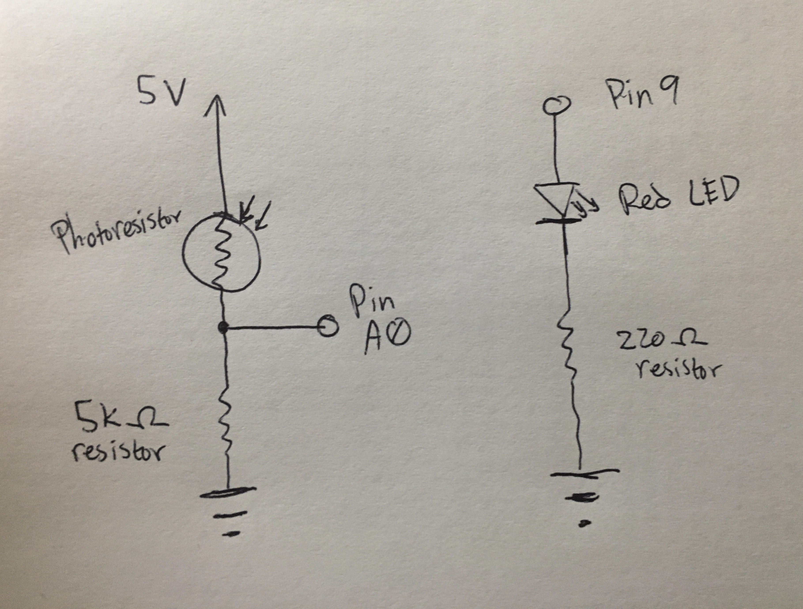
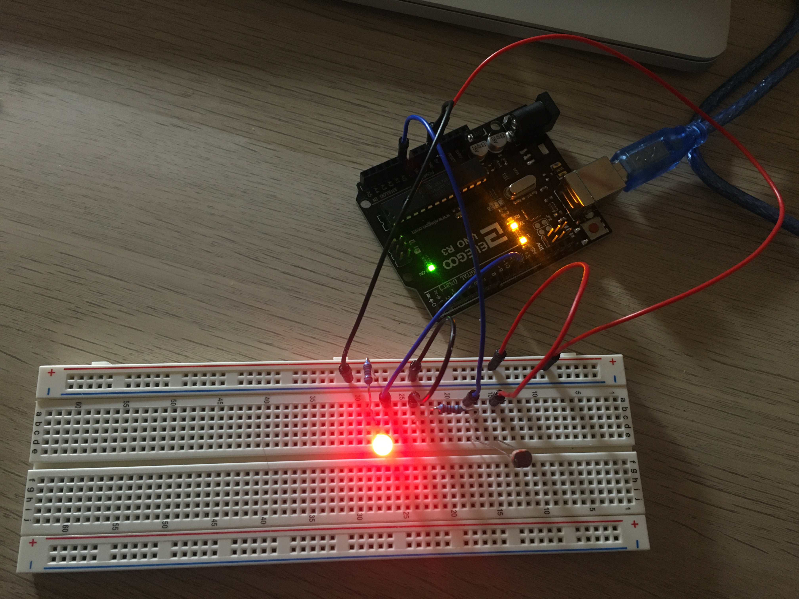

Schematic

As seen in the above schematic, the circuit contains 1 photoresistor and 1 red LED. The photoresistor
was connected to A0, which allowed for analog reading (input). Meanwhile, the red LED was
connected to pin 9 , which allowed for analog writing (output), as indicated by its tilde (~) symbol.
For the red LED, 5V-1.8V / 0.02A = 160 ohms minimum. The 220 ohm resistor was selected.
The smallest amount of resistance produced by the photoresistor was about 440 ohms when left at my normal room brightness.
A 5K ohm resistor was selected for the portion containing the photoresistor to reduce power consumption.
When at its brightest, the A0 input pin may get a reading as high as 4.95 V.
(Calculation: 5-0 = I * 5,440 --> I = 0.0000919 --> 5-Vout = I * 440 --> Vout = 4.95V)
By using a higher resistor at the end, the LED will pretty much never go completely dark
since the voltage change caused by the photoresistor would be miniscule. A lower value resistor,
like 220 ohms would cause the LED to be dimmer overall, since there would be less remaining voltage after the
photoresistor, and it was easier to make the LED go completely dim.
Circuit (Image)

In the image, the red LED is shown at its brightest, when the photoresistor is left uncovered.
The image shows a very simple setup with the photoresistor going into analog input and the LED
being controlled by the analog output. The higher resistor value chosen for the part with the photoresistor
created a less significant change in brightness, but was also "smoother" per se, probably due to
less change in brightness over time (but that can be adjusted by how quickly the LED is obscured too.)
The 220 ohm resistor was chosen for the red LED to help exacerbate the amount of brightness change visible.
It would be difficult to see the change in LED brightness if the LED was already dim due to a high resistor value.
Firmware (Code Snippet)
/*
Analog input, analog output, serial output
Reads an analog input pin, maps the result to a range from 0 to 255 and uses
the result to set the pulse width modulation (PWM) of an output pin.
Also prints the results to the Serial Monitor.
The circuit:
- photoresistor connected to analog pin 0 (A0).
- LED connected from digital pin 9 to ground
created 29 Dec. 2008
modified 9 Apr 2012
by Tom Igoe
modified 28 Jan 2020
by Kevin Kuo
This example code is in the public domain.
http://www.arduino.cc/en/Tutorial/AnalogInOutSerial
*/
// These constants won't change. They're used to give names to the pins used
// instead of just "A0" or "9".
// Analog input pin that the photoresistor is attached to
const int analogInPin = A0;
// Analog output pin that the LED is attached to, as marked by a ~
const int analogOutPin = 9;
// Used to store the value read from the photoresistor
int sensorValue = 0;
// Value output to the PWM (analog out)
int outputValue = 0;
void setup() {
// initialize serial communications at 9600 bps to see
// lines from serial monitor.
Serial.begin(9600);
}
// Initialize variable to store maximum sensor value.
int sensorMax = 0;
// Initialize variable to store minimum sensor value.
int sensorLow = 1023;
void loop() {
// read the analog in value:
sensorValue = analogRead(analogInPin);
// map it to the range of the analog out:
outputValue = map(sensorValue, 0, 1023, 0, 255);
// change the analog out value:
analogWrite(analogOutPin, outputValue);
// If statement checks if sensor value recorded
// a new high or new low value.
// First statement checks for a new high value.
if (sensorValue > sensorMax) {
// If new high, print label text.
Serial.print("NEW HIGH of: ");
// Include new high value in readable form.
Serial.println(sensorValue);
// Store the new max for next comparison.
sensorMax = sensorValue;
// Second statement checks for a new low value.
} else if (sensorValue < sensorLow) {
// If a new low, print label text.
Serial.print("NEW LOW of: ");
// Include new low value in readable form.
Serial.println(sensorValue);
// Store the new low for next comparison.
sensorLow = sensorValue;
}
// print the results to the Serial Monitor.
// First print a text label
Serial.print("Sensor Value = ");
// Then print the sensor value.
Serial.print(sensorValue);
// First print a text label with a tab character for
// easier reading in the monitor.
Serial.print("\t Output Value = ");
// Then print the mapped output value.
Serial.println(outputValue);
// Wait 100 milliseconds before the next loop for the analog-to-digital
// converter to settle after the last reading and to more easily
// see sensor reading changes in the visual monitor.
// Note: Can adjust to lower values for smoother darkening/brightening of LED.
delay(100);
}
The code is based off of the Arduino sample code titled "AnalogInOutSerial." However, it's been adjusted to
include an if statement and to be tailored for a photoresistor rather than a potentiometer.
Using the photoresistor sensor values, the software then accounts for the differing bits used in analog input/output
and maps the analog input values to analog output values with the map function.
Another chunk of code then checks if the sensor input value is a new high (max) or a new low (min).
If it is either a new high or new low, it will then add an additional "NEW HIGH" or "NEW LOW" message
in the Serial Monitor corresponding to the new record value. Otherwise, the serial monitor will continue to
print the sensor input and converted output values in the serial monitor with slightly diffferent capitalized labels.
The delay in milliseconds was increased to a point where the LED's brightness was still fairly smooth, but also
allowed for changes in the high/low sensor values to still be readable in the serial monitor.